C - c
cɑbɑːyfe चाबाऽयफे N सं. long jump; लम्बी कूद. SD: motion, गति सम्बंधी.
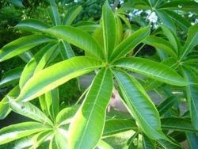 |
cɑc चाच N सं. a kind of tree; एक प्रकार का पेड़. Sterculia-foetida-feuilles. SD: flora, फूल-पत्ती. NT: Causes itching when touched. Bears red fruit. फल देने वाला पेड़ जिसको छूने से खुजली होती है।.Environmental
cɑe1 चाए VAR: e-cɑe एचाए. ADJ वि. bad; बुरा; गंदा; ख़राब.  mut cɔnel ʈʰuʈ bɔbin cɑe मूत चौनेल ठूट बौबीन चाए. I didn’t like your departure. मुझे आपका जाना अच्छा नहीं लगा।. e-cɑeʈɔːkʰo एचाएटौऽखो. useless wood. ख़राब लकड़ी. SD: attribute, विशेषता. SEE: cɑe2 ‘what’ ‘क्या चाएhm:{2}’.
mut cɔnel ʈʰuʈ bɔbin cɑe मूत चौनेल ठूट बौबीन चाए. I didn’t like your departure. मुझे आपका जाना अच्छा नहीं लगा।. e-cɑeʈɔːkʰo एचाएटौऽखो. useless wood. ख़राब लकड़ी. SD: attribute, विशेषता. SEE: cɑe2 ‘what’ ‘क्या चाएhm:{2}’.
cɑe2 चाए VAR: cɑy चाय. WH-Q प्रश्न. what; क्या. cɑːybe चाऽयबे. What is it? यह क्या है?  ŋu mɑtɑ cɑybi jiŋum ङू माता चायबी जीङूम. What do you offer me to eat? आप मुझे क्या खिलाएंगे? ŋu mɑtɑ cɑe bijikɔm ङू माता चाए बीजीकौम. What are you feeding me? तुम मुझे क्या खिला रहे हो? SD: interrogative, प्रश्नवाचक. NT: Wh-question. प्रश्नवाचक।. SEE: cɑe1 ‘bad’ ‘बुरा; गंदा; ख़राब चाएhm:{1}’.
ŋu mɑtɑ cɑybi jiŋum ङू माता चायबी जीङूम. What do you offer me to eat? आप मुझे क्या खिलाएंगे? ŋu mɑtɑ cɑe bijikɔm ङू माता चाए बीजीकौम. What are you feeding me? तुम मुझे क्या खिला रहे हो? SD: interrogative, प्रश्नवाचक. NT: Wh-question. प्रश्नवाचक।. SEE: cɑe1 ‘bad’ ‘बुरा; गंदा; ख़राब चाएhm:{1}’.
cɑemeɔtotco चाएमेऔतोतचो MORPH: cɑe-meɔ-totco. N सं. mango; आम. SD: edible fruit, खाद्य फल.Environmental
cɑeo चाएओ MORPH: cɑ-e-o. VAR: cɑːyiyo चाऽयीयो; cyɑːk च्याऽक; cyɑːt च्याऽत; cyɑːl च्याऽल; cyɑl च्याल. WH-Q प्रश्न. where, used for animates; कहां, सजीव के लिए प्रयुक्त होता है.  cyɑl ŋot ɲyo be च्याल ङोत ञ्यो बे. Where is your house? तुम्हारा घर कहां है? SD: interrogative, प्रश्नवाचक.
cyɑl ŋot ɲyo be च्याल ङोत ञ्यो बे. Where is your house? तुम्हारा घर कहां है? SD: interrogative, प्रश्नवाचक.
 cɑeone चाएओने VAR: cɑy-one चायोने. N सं. ghee, clarified butter; घी. SD: edible item, खाद्य सामग्री.Environmental
cɑeone चाएओने VAR: cɑy-one चायोने. N सं. ghee, clarified butter; घी. SD: edible item, खाद्य सामग्री.Environmental
cɑešitomeo चाएशीतोमेओ MORPH: cɑe-šito-meo. N सं. a kind of stone used for sharpening, a whetstone; एक प्रकार का धार बनाने वाला पत्थर. SD: natural environment, प्राकृतिक वातावरण.Environmental
 cɑetɑrɑupʰu चाएतराऊफू MORPH: cɑe-tɑrɑ-upʰu. N सं. a kind of wooden basket; एक प्रकार की लकड़ी की टोकरी. SD: household, घरेलू.
cɑetɑrɑupʰu चाएतराऊफू MORPH: cɑe-tɑrɑ-upʰu. N सं. a kind of wooden basket; एक प्रकार की लकड़ी की टोकरी. SD: household, घरेलू.
cɑetotcɔʈɔ चाएतोतचौटौ MORPH: cɑe-tot-cɔʈɔ. N सं. fish-hook; कांटा. SD: tool, औज़ार, fish, मछली.Environmental
cɑetɔkcɔ चाएतौकचौ MORPH: cɑe-tɔk-cɔ. N सं. a kind of sour fruit; एक प्रकार का खट्टा फल. SD: edible fruit, खाद्य फल.Environmental
cɑeʈʰile चाएठीले MORPH: cɑe-ʈʰile. ADJ वि. heavy; भारी. SD: attribute, विशेषता.
cɑeʈɔʈcɔ चाएटौटचौ MORPH: cɑe-ʈɔʈ-cɔ. N सं. rotten fruit, used as a ball for playing; सड़ा हुआ फल जो गेंद की तरह खेलने के काम आता है. SD: flora, फूल-पत्ती.Environmental
cɑi चाई Etym: Hindi; हिन्दी. N सं. tea; चाय. SD: edible item, खाद्य सामग्री.Environmental
cɑijullu चाईजूल्लू MORPH: cɑi-jullu. N सं. waist ornament for men; पुरुषों के कमर के नीचे का वस्त्र. SD: costume & adornment, आभूषण एवं श्रृंगार.
cɑkʰɑmimi चाखामीमी MORPH: cɑ-kʰɑ-mimi. N सं. old woman; बुढ़िया. SD: people, लोग.
cɑkʰoe चाखोए N सं. platform; मचान. SD: hunting & gathering, शिकार एवं संचय सम्बंधी. SEE: ʈʰicɑ ‘rack; platform; stage’ ‘रैक; चबूतरा; मंच ठीचा ’.Environmental
cɑle चाले N सं. scar; निशान. SD: attribute, विशेषता.
 |
 cɑlemo1 चालेमो N सं. Moray eel; एक प्रकार की मछली. SD: fish, मछली. NT: Found in freshwater. मीठे पानी में पाए जाने वाली मछली जो सांप की तरह दिखती है।. SEE: cɑlemo2 ‘snake’ ‘सांप चालेमोhm:{2}’.Environmental
cɑlemo1 चालेमो N सं. Moray eel; एक प्रकार की मछली. SD: fish, मछली. NT: Found in freshwater. मीठे पानी में पाए जाने वाली मछली जो सांप की तरह दिखती है।. SEE: cɑlemo2 ‘snake’ ‘सांप चालेमोhm:{2}’.Environmental
 cɑlemo2 चालेमो N सं. edible, red salt-water snake; खारे पानी का लाल रंग का खाद्य सांप. SD: reptile, रेंगने वाले जंतु. SEE: calemo1 ‘fish’ ‘मछली चालेमोhm:{1}’.Environmental
cɑlemo2 चालेमो N सं. edible, red salt-water snake; खारे पानी का लाल रंग का खाद्य सांप. SD: reptile, रेंगने वाले जंतु. SEE: calemo1 ‘fish’ ‘मछली चालेमोhm:{1}’.Environmental
 |
cɑlo1 चालो VAR: cɑlɔ चालौ. N सं. short-tailed cricket; छोटी पूंछ वाला झींगुर. Bachytrupes potentosus. SD: insect & invertebrate, कीट-पतंग एवं अरीढ़ जीव. SEE: cɑlo2 ‘many’ ‘ज़्यादा; ढेर सारा चालोhm:{2}’; cɑlo3 ‘shell’ ‘सीपी चालोhm:{3}’.Environmental
cɑlo2 चालो Q परि. many; ज़्यादा; ढेर सारा. SD: quantifier, परिमाण वाचक. SEE: cɑlo1 ‘cricket’ ‘झींगुर चालोhm:{1}’; cɑlo3 ‘shell’ ‘सीपी चालोhm:{3}’.
cɑlo3 चालो VAR: cɑlɔ चालौ. N सं. a kind of small shell; एक प्रकार की छोटी सीपी. SD: marine, समुद्री. NT: Used for making the Andamanese girdle, the ‘shirbele’. ‘शिरबेले’ आभूषण बनाने में प्रयुक्त होने वाली सीपी।. SEE: cɑlo1 ‘cricket’ ‘झींगुर चालोhm:{1}’; cɑlo2 ‘many’ ‘ज़्यादा; ढेर सारा चालोhm:{2}’.Environmental
cɑlocɔfe चालोचौफे MORPH: cɑlo-cɔfe. N सं. many clothes; ढेर कपड़े. SD: household, घरेलू.
 cɑlotɛc चालोतैच MORPH: cɑlo-tɛc. N सं. piece of shell; सीपी का टुकड़ा. SD: marine, समुद्री.Environmental
cɑlotɛc चालोतैच MORPH: cɑlo-tɛc. N सं. piece of shell; सीपी का टुकड़ा. SD: marine, समुद्री.Environmental
cɑːlɔ चाऽलौ N सं. grass; घास. SD: flora, फूल-पत्ती.Environmental
cɑːlɔte चाऽलौते N सं. a kind of tree; एक प्रकार का पेड़. SD: flora, फूल-पत्ती.Environmental
 cɑmu चामू N सं. clown fish; एक प्रकार की मछली. SD: fish, मछली.Environmental
cɑmu चामू N सं. clown fish; एक प्रकार की मछली. SD: fish, मछली.Environmental
cɑnɑ चाना Etym: Bea; बेया. VAR: cɑnolɑ चानोला. N सं. madam; मैडम. SD: people, लोग.
cɑŋɑ चाङा N सं. sanga, vessel used to carry water; सांगा (पानी ढोने का बर्तन). SD: household, घरेलू.
 cɑo चाओ N सं. dog; कुत्ता.
cɑo चाओ N सं. dog; कुत्ता.  cɑo bem pʰɛre cɔm चाओ बेम फैरे चौम. Dogs bite each other. कुत्ते एक-दूसरे को काटते हैं।.
cɑo bem pʰɛre cɔm चाओ बेम फैरे चौम. Dogs bite each other. कुत्ते एक-दूसरे को काटते हैं।.  cɑo bem bošom चाओ बेम बोशोम. Dogs fight each other. कुत्ते आपस में लड़ते हैं।. SD: animal, जानवर.
cɑo bem bošom चाओ बेम बोशोम. Dogs fight each other. कुत्ते आपस में लड़ते हैं।. SD: animal, जानवर.
cɑːo चाऽओ N सं. rain fish; वर्षा की मछली. SD: fish, मछली.Environmental
cɑobukʰu चाओबूखू MORPH: cɑo-bukʰu. VAR: cɑːwbuxu चाऽवबूखू. N सं. bitch; कुतिया. SD: animal, जानवर.
cɑoercek चाओएरचेक MORPH: cɑo-ercek. N सं. dog (smart); तेज़ कुत्ता. SD: animal, जानवर.
 cɑotɑrɑkɑrɑp चाओताराकाराप MORPH: cɑo-tɑrɑ-kɑrɑp. N सं. back/ waist of a dog; कुत्ते की कमर या पीठ. SD: body part term, शारीरिक अंग शब्दावली.
cɑotɑrɑkɑrɑp चाओताराकाराप MORPH: cɑo-tɑrɑ-kɑrɑp. N सं. back/ waist of a dog; कुत्ते की कमर या पीठ. SD: body part term, शारीरिक अंग शब्दावली.
cɑotʰɑro चाओथारो MORPH: cɑo-tʰɑro. N सं. male dog; नर कुत्ता. SD: animal, जानवर.
cɑotʰire चाओथीरे MORPH: cɑo-tʰire. N सं. puppy; पिल्ला. SD: animal, जानवर.
cɑotʰɔmo1 चाओथौमो N सं. bait; चारा. SD: hunting & gathering, शिकार एवं संचय सम्बंधी. SEE: cɑotʰɔmo2 ‘meat, rotten’ ‘मांस, सड़ा हुआ चाओथौमोhm:{2}’.Environmental
cɑotʰɔmo2 चाओथौमो N सं. rotten meat; सड़ा हुआ मांस. SD: waste product, कूड़ा-कचरा. SEE: cɑotʰɔmo1 ‘bait’ ‘चारा चाओथौमोhm:{2}’.
cɑpʰo चाफो ADJ वि. lazy; आलसी. SD: attribute, विशेषता.
cɑrɑlo1 चारालो VAR: cɑːrɑːlɔ चाऽराऽलौ. N सं. conch, white; एक प्रकार का सफ़ेद शंख. SD: marine, समुद्री. SEE: cɑrɑlo2 ‘stones, small’ ‘पत्थर, छोटे चारालोhm:{2}’.Environmental
cɑrɑlo2 चारालो VAR: cɑːrɑːlɔ चाऽराऽलौ. N सं. stones, small; छोटे पत्थर. SD: marine, समुद्री. SEE: cɑrɑlo1 ‘conch, white’ ‘शंख, सफ़ेद चारालोhm:{1}’.Environmental
cɑːrɑːme चाऽराऽमे N सं. beads used to make garland; माला बनाने में प्रयुक्त होने वाला मोती या दाना. SD: costume & adornment, आभूषण एवं श्रृंगार.
cɑrɑp चाराप Etym: Bea; बेया. VAR: cɑrɑpɑ चारापा. N सं. a kind of flower; एक प्रकार का फूल. SD: flora, फूल-पत्ती. NT: The flower is associated with the period of September, October and the first half of November, which is when it blooms. Blooming of this flower indicates the onset of winter. इस फूल का खिलना जाड़े के आगमन का द्योतक है। सितंबर, अक्तूबर और मध्य नवम्बर तक का काल।.Environmental
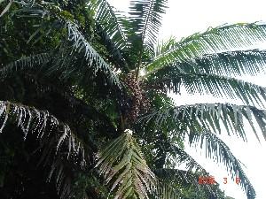 |
cɑrɑšilu चाराशीलू N सं. a kind of tree; एक प्रकार का पेड़. SD: flora, फूल-पत्ती.Environmental
 |
cɑrɑšilutotco चाराशीलूतोत्चो MORPH: cɑrɑšilu-tot-co. N सं. fruit of carashilu tree; चाराशीलू पेड़ का फल. SD: edible fruit, खाद्य फल.Environmental
cɑrɛrɑtʰu चारैराथू MORPH: cɑrɛ-rɑ-tʰu. N सं. life; ज़िंदगी. SD: life, जीवन.
cɑːrɛtɑcɑːy चाऽरैताचाय MORPH: cɑːrɛ-tɑcɑːy. N सं. low tide; भाटा. SD: natural environment, प्राकृतिक वातावरण.Environmental
cɑːrɛtotfeʈɔ चाऽरैतोतफेटौ N सं. high tide; ज्वार. SD: natural environment, प्राकृतिक वातावरण.Environmental
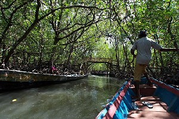 |
 cɑrʈɔŋ1 चारतौङ VAR: cɑr-tɔŋ चारटौङ. N सं. mangrove; खाड़ी पेड़. SD: flora, फूल-पत्ती. SEE: cɑrʈɔŋ2 ‘sides of creek’ ‘किनारे, खाड़ी के चारटौङhm:{2}’.Environmental
cɑrʈɔŋ1 चारतौङ VAR: cɑr-tɔŋ चारटौङ. N सं. mangrove; खाड़ी पेड़. SD: flora, फूल-पत्ती. SEE: cɑrʈɔŋ2 ‘sides of creek’ ‘किनारे, खाड़ी के चारटौङhm:{2}’.Environmental
cɑrʈɔŋ2 चारटौङ MORPH: cɑr-ʈɔŋ. DEIXIS डीक्सीस. sides of a creek; खाड़ी के किनारे. SD: natural environment, प्राकृतिक वातावरण. SEE: cɑrʈɔŋ1 ‘mangrove’ ‘खाड़ी पेड़ चारटौङhm:{1}’.Environmental
cɑtɑli चाताली Etym: North Andaman; उत्तरी अण्डमान. N सं. a kind of vegetarian food; एक प्रकार का शाकाहारी खाना. SD: edible item, खाद्य सामग्री.Environmental
cɑʈ चाट V क्रि. do; करना.  ŋo cɑybi cɑʈom ङो चायबी चाटोम. What are you doing? तुम क्या कर रहे हो?
ŋo cɑybi cɑʈom ङो चायबी चाटोम. What are you doing? तुम क्या कर रहे हो?  du ecɑʈo दू एचाटो. What did he do? उसने क्या किया?
du ecɑʈo दू एचाटो. What did he do? उसने क्या किया?
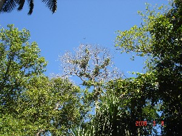 |
cɑʈɑle चाटाले VAR: ceʈɑle चेटाले. N सं. a kind of tree found near the seashore; समुद्र के किनारे पाया जाने वाला पेड़. SD: flora, फूल-पत्ती. NT: The fruit of this tree is believed to be dangerous to eat as it can lead to an increase in the size of the head. ऐसा माना जाता है कि इस पेड़ के फल खाने से सिर बड़े आकार का हो जाता है। घातक पेड़।.Environmental
 |
cɑʈɑletotco चाटालेतोत्चो MORPH: cɑʈɑle-tot-co. N सं. red palm fruit; लाल ताड़ का फल. SD: edible fruit, खाद्य फल.Environmental
cɑʈɑwe चाटावे N सं. mat; चटाई. SD: household, घरेलू.
cɑumo चाऊमो V-INTR अ क्रि. hide; छुपना.
 |
cɑvəl cɪɽɪyɑ चावल चिड़िया N सं. shrike; चावल चिड़िया. SD: bird, पक्षी.Environmental
cɑybi चायबी MORPH: cɑy-bi. CONJ संयो. what is (used as a conjunction); समुच्चयबोधक. SD: conjunct, संयोजक.
cɑykʰudi चायखूदी MORPH: cɑy-kʰudi. WH-Q प्रश्न. why, what for; क्यों, किसलिए. dilli kɛk cɑːy kʰudi ŋut connebom दील्ली कैक चाऽय खूदी ङूत चोन्नेबोम. Why are you going to Delhi? तुम दिल्ली क्यों जा रहे हो? SD: interrogative, प्रश्नवाचक.
 cɑytɑrɑoco चायताराओचो MORPH: cɑy-tɑrɑ-oco. N सं. net basket; जालीदार टोकरी. SD: household, घरेलू.
cɑytɑrɑoco चायताराओचो MORPH: cɑy-tɑrɑ-oco. N सं. net basket; जालीदार टोकरी. SD: household, घरेलू.
ce चे N सं. anger; गुस्सा. ʈʰ-ot-bo-tɑrɑ-ce ठोतबोताराचे. I have anger in my heart. मैं गुस्सा हूं।. SD: emotion, भावनात्मक. SEE: borɑce ‘be angry’ ‘गुस्सा होना बोराचे ’.
ce चे Etym: Bo; बो. V क्रि. leave; जाना/ चले जाना. cebeŋ चेबेङ. Don’t go. मत जाओ।.
cebɑ चेबा N सं. sling made from the bark of the Bol tree used by women for carrying children on their back; झूला, जिससे महिलाएं बच्चों को अपनी पीठ पर रखती हैं. SD: cultural item, सांस्कृतिक सामग्री. NT: This sling is made of the bark of the Bol tree. प्रायः यह झूला बोल पेड़ की छाल से बनाया जाता है।.
cekʰ चेख Etym: Khora; खोरा. VAR: cɛkʰ चैख. N सं. anger; गुस्सा. moɛr-cɛkʰe-ʈɔlo मौऐर चैखे टौलो. We became angry. हम गुस्सा हो गए।. SD: psychological predicate, मनोवैज्ञानिक विधेय, emotion, भावनात्मक.
cel चेल VAR: cɛːl चैऽल. N सं. waterfall; झरना; जलप्रपात. SD: natural environment, प्राकृतिक वातावरण.Environmental
celɑcno चेलाच्नो N सं. a kind of plant; एक प्रकार का पौधा. SD: flora, फूल-पत्ती.Environmental
celebi चेलेबी Etym: Jeru; जेरू. VAR: clilipɑ च्लीलीपा. Etym: Bea; बेया. N सं. a kind of flower; एक प्रकार का फूल. SD: flora, फूल-पत्ती. NT: It blooms between mid-November and mid-February. इस फूल का खिलने का समय मध्य नवम्बर से मध्य फरवरी है। शीत ऋतु से सम्बंधित।.Environmental
 |
celene चेलेने N सं. a kind of fishing bird; Crab Plover; एक प्रकार का मछली का शिकार करने वाला पक्षी. Dromas ardeola. SD: bird, पक्षी.Environmental
 celet चेलेत Etym: North Andaman; उत्तरी अण्डमान. VAR: cɛlet चैलेत. N सं. a small-sized red fruit; छोटे आकार का लाल फल. SD: edible fruit, खाद्य फल. NT: One’s mouth turns red after eating this fruit, which is believed to increase blood in the body. इस फल को खाने से मुंह लाल हो जाता है। यह फल ख़ून बढ़ाता है।.Environmental
celet चेलेत Etym: North Andaman; उत्तरी अण्डमान. VAR: cɛlet चैलेत. N सं. a small-sized red fruit; छोटे आकार का लाल फल. SD: edible fruit, खाद्य फल. NT: One’s mouth turns red after eating this fruit, which is believed to increase blood in the body. इस फल को खाने से मुंह लाल हो जाता है। यह फल ख़ून बढ़ाता है।.Environmental
celmo1 चेलमो N सं. a kind of flower which is used during song and dance; एक प्रकार का फूल जो गाने व नाचने के प्रयोग में आता है. SD: flora, फूल-पत्ती. SEE: celmo2 ‘tree’ ‘पेड़ चेलमोhm:{2}’.Environmental
celmo2 चेलमो N सं. tree; पेड़. SD: flora, फूल-पत्ती. NT: Wood used for carving. इसकी लकड़ी नक्काशी के काम में आती है।. SEE: celmo1 ‘flower’ ‘फूल चेलमोhm:{1}’.Environmental
cemeʈɛc चेमेटैच N सं. a kind of grass with sharp blades; एक प्रकार की तेज़ धार वाली घास. SD: flora, फूल-पत्ती.Environmental
cenɑːk चेनाऽक N सं. a kind of tree; एक प्रकार का पेड़. SD: flora, फूल-पत्ती.Environmental
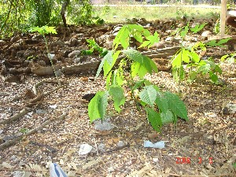 |
cenɑr चेनार N सं. a kind of tree found near the seashore; समुद्र किनारे पाया जाने वाला पेड़. SD: flora, फूल-पत्ती.Environmental
cenɑrcom चेनारचोम MORPH: cenɑr-com. N सं. a big black ant; एक प्रकार की काले बड़े आकार की चींटी. SD: insect & invertebrate, कीट-पतंग एवं अरीढ़ जीव.Environmental
 ceo चेओ VAR: cɛo चैओ. N सं. knife; चाकू.
ceo चेओ VAR: cɛo चैओ. N सं. knife; चाकू.  ɑtʰirenu ceotɑ konɑbit beliŋo आथीरेनू चेओता कोनाबीत बेलीङो. The child cut the Tendu fruit with a knife. बच्चे ने चाकू से तेंदूफल काटा।. SD: hunting & gathering, शिकार एवं संचय सम्बंधी. SEE: pʰɔrcɛɔ ‘instrument, small’ ‘दाओ, छोटा फौरचैऔ ’.Environmental
ɑtʰirenu ceotɑ konɑbit beliŋo आथीरेनू चेओता कोनाबीत बेलीङो. The child cut the Tendu fruit with a knife. बच्चे ने चाकू से तेंदूफल काटा।. SD: hunting & gathering, शिकार एवं संचय सम्बंधी. SEE: pʰɔrcɛɔ ‘instrument, small’ ‘दाओ, छोटा फौरचैऔ ’.Environmental
 ceotorɔpʰo चेओतोरौफो MORPH: ceoto-rɔpʰo. VAR: cyoto ropʰo च्योतो रोफो; cyɔto rɔøo च्यौतो रौफो. N सं. sharp knife; तेज़ चाकू. SD: tool, औज़ार.
ceotorɔpʰo चेओतोरौफो MORPH: ceoto-rɔpʰo. VAR: cyoto ropʰo च्योतो रोफो; cyɔto rɔøo च्यौतो रौफो. N सं. sharp knife; तेज़ चाकू. SD: tool, औज़ार.
cerɑ चेरा N सं. burning (of hand); जलन (हाथ में). SD: illness, रोग.
cerɑle चेराले N सं. tool used for making boats, killing turtles, etc; औज़ार जो डोंगी बनाने, कछुआ मारने आदि के काम आता है. SD: tool, औज़ार.
cerɑlo चेरालो MORPH: cer-ɑlo. N सं. roots of tree in the creeks; खाड़ी पेड़ की जड़. SD: flora, फूल-पत्ती.Environmental
cereːm चेरेऽम N सं. a kind of tree; एक प्रकार का पेड़. SD: flora, फूल-पत्ती.Environmental
cerŋɑt चेरङात ADJ वि. rough (road); पथरीला (सड़क). SD: attribute, विशेषता.
cerxo चेरखो V क्रि. sneeze; छींक.
cəʃmɑ चश्मा n सं. Spectacles; ऐनक.
 |
 ceʈɑle चेटाले N सं. a kind of small bird; Oriental Cuckoo; एक प्रकार का छोटा पक्षी. SD: bird, पक्षी. NT: Lifts its plumes when it calls. It is considered auspicious to go hunting when it calls. It is a summer visitor. अपनी पूंछ उठाकर बोलता है। इसके बोलने पर शिकार पर जाना शुभ माना जाता है। गर्मियों में देखा जा सकता है।.Environmental
ceʈɑle चेटाले N सं. a kind of small bird; Oriental Cuckoo; एक प्रकार का छोटा पक्षी. SD: bird, पक्षी. NT: Lifts its plumes when it calls. It is considered auspicious to go hunting when it calls. It is a summer visitor. अपनी पूंछ उठाकर बोलता है। इसके बोलने पर शिकार पर जाना शुभ माना जाता है। गर्मियों में देखा जा सकता है।.Environmental
ceʈʰo चेठो DEIXIS डीक्सीस. below; नीचे. ʈɔŋ tot ceʈʰo kʰider be टौङ तोत चेठो खीदेर बे. There is a coconut under the tree. पेड़ के नीचे एक नारियल है।. SD: space, अन्तरिक्ष.Environmental
ceʈʈɑːle चेट्टाऽले N सं. a kind of fruit; एक प्रकार का फल. SD: flora, फूल-पत्ती.Environmental
ceʈʈeŋɔm चेट्टेङौम N सं. smell of red corals; लाल मूंगे की सुगंध. SD: attribute, विशेषता.
cɛɖɛlo चैडैलो N सं. a kind of fruit; एक प्रकार का फल. SD: edible fruit, खाद्य फल. NT: It is burnt and ground into a paste by Ranchis to be used as a body-paint. रांची लोग इसे जलाकर पीसते हैं और उससे से बनी लेई को शरीर को रंगने के काम में लाते हैं।.Environmental
cɛlecɛcmo चैलेचैच्मो N सं. bush; झाड़ी. SD: flora, फूल-पत्ती.Environmental
cɛlele चैलेले N सं. a kind of sea bird, a plover; एक प्रकार का समुद्री पक्षी. SD: bird, पक्षी.Environmental
 |
 cɛlene चैलेने N सं. a kind of green heron; एक प्रकार का हरा बगुला. Butorides stratus. SD: bird, पक्षी.Environmental
cɛlene चैलेने N सं. a kind of green heron; एक प्रकार का हरा बगुला. Butorides stratus. SD: bird, पक्षी.Environmental
cɛlmo चैलमो N सं. stem, of an arrow; तीर का डंडा. SD: hunting & gathering, शिकार एवं संचय सम्बंधी.Environmental
cɛloe चैलोए N सं. smell of sea shells; सीपी और शंख की गंध. SD: attribute, विशेषता, natural environment, प्राकृतिक वातावरण.Environmental
cɛm चैम Etym: Jeru; जेरू. N सं. injury/ wound; चोट/ घाव. SD: illness, रोग.
cɛnkolo चैन्कोलो MORPH: cɛn-kolo. N सं. turban shell; एक प्रकार की सीपी. SD: marine, समुद्री.Environmental
cɛnɔ चैनौ N सं. unbearable stench; बदबू; दुर्गंध. SD: attribute, विशेषता.
 cɛp चैप VAR: cɛp-ʈoŋ चैपटौङ. N सं. mangrove tree with soft thorns on the roots; जड़ पर हल्के कांटों वाला खाड़ी पेड़. SD: flora, फूल-पत्ती.Environmental
cɛp चैप VAR: cɛp-ʈoŋ चैपटौङ. N सं. mangrove tree with soft thorns on the roots; जड़ पर हल्के कांटों वाला खाड़ी पेड़. SD: flora, फूल-पत्ती.Environmental
 cɛptɑrɑbucu चैपताराबूचू MORPH: cɛp-tɑrɑ-bucu. N सं. roots, of the mangrove; खाड़ी पेड़ की जड़. SD: flora, फूल-पत्ती.Environmental
cɛptɑrɑbucu चैपताराबूचू MORPH: cɛp-tɑrɑ-bucu. N सं. roots, of the mangrove; खाड़ी पेड़ की जड़. SD: flora, फूल-पत्ती.Environmental
cɛr1 चैर V क्रि. burn; जलाना. SEE: cɛr2 ‘rain’ ‘बारिश चैरhm:{2}’.
cɛr2 चैर VAR: ɛšɛr ऐशैर. V क्रि. rain; बारिश. e-cɛr ए चैर. It rains. बारिश होती है।. ɛcɛrɔm ऐचैरौम. It is raining. बारिश हो रही है।. SEE: cɛr1 ‘burn’ ‘जलाना चैरhm:{1}’.
 cɛrel चैरेल VAR: cɛrɛl चैरैल. ADJ वि. green; blue; हरा; नीला. SD: attribute, विशेषता.
cɛrel चैरेल VAR: cɛrɛl चैरैल. ADJ वि. green; blue; हरा; नीला. SD: attribute, विशेषता.
 |  |
 cɛreo चैरेओ VAR: cereo चेरेओ. N सं. a type of Asian cuckoo; एक प्रकार की एशियाई कोयल. Eudynamys scolopacea. SD: bird, पक्षी. NT: The male is black and the female is brownish-red. नर काला व मादा भूरे रंग की होती है।.Environmental
cɛreo चैरेओ VAR: cereo चेरेओ. N सं. a type of Asian cuckoo; एक प्रकार की एशियाई कोयल. Eudynamys scolopacea. SD: bird, पक्षी. NT: The male is black and the female is brownish-red. नर काला व मादा भूरे रंग की होती है।.Environmental
 |
 cɛreo tutbi चैरेओ तूतबी VAR: cɛreo चैरेओ. N सं. a kind of yellow bird; Black-naped Oriole; एक प्रकार का पीला पक्षी. SD: bird, पक्षी.Environmental
cɛreo tutbi चैरेओ तूतबी VAR: cɛreo चैरेओ. N सं. a kind of yellow bird; Black-naped Oriole; एक प्रकार का पीला पक्षी. SD: bird, पक्षी.Environmental
cɛrɛkotiyo चैरैकोतीयो N सं. a small white bird with black stripes on the wings; Pied Triller; सफ़ेद, छोटा पक्षी जिसके पंखों पर काले धब्बे होते हैं. Lalage nigra. SD: bird, पक्षी.Environmental
cɛrle चैरले VAR: cɛrle चैरले. N सं. a small blood-sucking green fly; एक छोटी ख़ून चूसने वाली हरी मक्खी. SD: insect & invertebrate, कीट-पतंग एवं अरीढ़ जीव.Environmental
cɛro चैरो V क्रि. fold; मोड़ना.
cɛrpʰo1 चैरफो N सं. sneeze; छींक. SD: illness, रोग. SEE: cɛrpʰo2 ‘sneeze’ ‘छींकना चैरफोhm:{2}’.
cɛrpʰo2 चैरफो V क्रि. sneeze; छींकना. cɑy bi cerxobe चाय बी चेरखोबे. Why do you sneeze? क्यों छींकते हो ? cɛr-bo चैरबो. She sneezed. उसने छींका।. SEE: cɛrpʰo1 ‘sneeze’ ‘छींक चैरफोhm:{1}’.
cɛʈʰerɑː चैठेराऽ N सं. Triggerfish; मछली जो पत्थरों के समीप पाई जाती है. Balistapus undulatus. SD: fish, मछली. NT: It lives near rocks and is hunted with arrows which are aimed at its neck. पत्थरों और चट्टानों के पास रहती है। इसकी गर्दन पर तीर मार कर इसका शिकार किया जाता है।.Environmental
ci ची V क्रि. come; आना.  kʰuru kotrɑkɑk cibe खूरू कोत्राकाक चीबे. Come in. अंदर आ जाओ।.
kʰuru kotrɑkɑk cibe खूरू कोत्राकाक चीबे. Come in. अंदर आ जाओ।.
ciːki चीऽकी WH-Q प्रश्न. how much; कितना. SD: interrogative, प्रश्नवाचक.
cilo चीलो N सं. a big tree that looks like a palm tree and is found in the deep jungle; एक विशाल ताड़ जैसा पेड़ जो जंगल के अंदर पाया जाता है. SD: flora, फूल-पत्ती.Environmental
cim चीम V क्रि. pour; उड़ेलना. ekcime एकचीमे. Pour (it). उड़ेलो (इसे)।.
cimi चीमी VAR: simi सीमी. Etym: North Andaman; उत्तरी अण्डमान. N सं. tall mangrove tree used as firewood; mangrove seed; ऊंचा वनस्पति पेड़ जो ईंधन के काम आता है; वनस्पति बीज. SD: flora, फूल-पत्ती.Environmental
cʰimu छीमू ADJ वि. wet; गीला. SD: attribute, विशेषता.
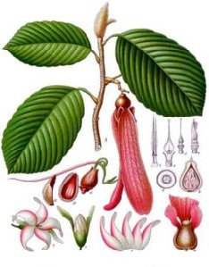 |
cinɑr चीनार N सं. a kind of plant; एक प्रकार का पौधा. Dipterocarpus. SD: flora, फूल-पत्ती.Environmental
ciorɑtpʰoi चीओरात्फोई V क्रि. seeing someone on turning around; घूमकर देखना.
ciriʈli चीरीटली N सं. turtle; कछुआ. SD: marine, समुद्री.Environmental
cirɔːʈɛːʈ चीरौऽटैऽट N सं. Surmai fish; सुरमई मछली. SD: fish, मछली.Environmental
ciʈkʰɑ चीटखा INTJ वि बो. that’s it!; सही है! SD: emotion, भावनात्मक. NT: This interjection is used when someone hits the target. इसका प्रयोग अक्सर निशाना सही लगने पर किया जाता है।.
ciwbɑ चीवबा N सं. cradle; पालना; झूला. SD: household, घरेलू.
co चो VAR: ɛcop ऐचोप. V क्रि. tie up; बांधना. roɑ-be cobe mɑe रोआ बे चोबे माए. Tie up the dongi. डोंगी को बांधो।.
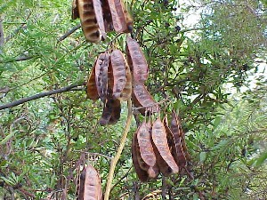 |
coː चोऽ N सं. beans; फली. SD: flora, फूल-पत्ती.Environmental
 |
 coɑ चोआ N सं. dolphin; डौल्फिन मछली. SD: fish, मछली.Environmental
coɑ चोआ N सं. dolphin; डौल्फिन मछली. SD: fish, मछली.Environmental
 |
 coɑi चोआई VAR: coɑe चोआए. N सं. giant clam; एक प्रकार की बड़ी सीपी, काला जड़ी. SD: marine, समुद्री.Environmental
coɑi चोआई VAR: coɑe चोआए. N सं. giant clam; एक प्रकार की बड़ी सीपी, काला जड़ी. SD: marine, समुद्री.Environmental
coɑitʰomo चोआईथोमो MORPH: coɑi-tʰomo. N सं. meat inside the clam; सीपी का मांस. SD: marine, समुद्री.Environmental
coɑitutcɛloe चोआईतूतचैलोए MORPH: coɑi-tut-cɛloe. N सं. smell of clams emitting from the sea; सीपी की गंध जो समुद्र से उठती है. SD: attribute, विशेषता.
coɑy चोआय N सं. shell with two halves; दो भागों में बंटी सीपी. SD: marine, समुद्री.Environmental
cobɑ चोबा VAR: it-cʰɔbɑ ईतछौबा. V क्रि. suck; चूसना.
cobie चोबीए V क्रि. headache; सिरदर्द होना. ʈʰe-co-bie-k-ɔm ठेचोबीएकौम. My head is spinning. मेरा सिर घूम रहा है।.
 coboŋ चोबोङ N सं. land with an abundance of bushes; big forest; grass; झाड़ियों का क्षेत्र; जंगल; घास. SD: flora, फूल-पत्ती.Environmental
coboŋ चोबोङ N सं. land with an abundance of bushes; big forest; grass; झाड़ियों का क्षेत्र; जंगल; घास. SD: flora, फूल-पत्ती.Environmental
coːɖimo चोऽडीमो N सं. newt; गोह. SD: reptile, रेंगने वाले जंतु.Environmental
cokʰ चोख VAR: cokʰɔ-em-o चोखौएमो. V क्रि. row boat; नाव खेना.
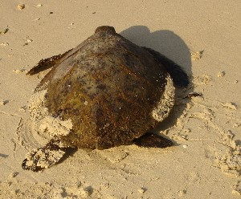 |
 cokbi चोक्बी VAR: cɔkbi चौक्बी. N सं. a green medium-sized turtle; एक हरा मध्यम आकार का कछुआ. SD: marine, समुद्री.Environmental
cokbi चोक्बी VAR: cɔkbi चौक्बी. N सं. a green medium-sized turtle; एक हरा मध्यम आकार का कछुआ. SD: marine, समुद्री.Environmental
cokbiciro चोकबीचीरो MORPH: cokbi-ciro. N सं. liver, of a turtle; कछुए का कलेजा. SD: body part term, शारीरिक अंग शब्दावली.
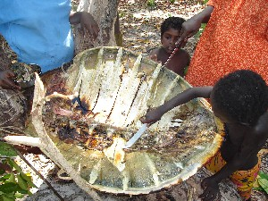 |
cokbijo चोकबीजो MORPH: cokbi-ijo. VAR: cokbi-kʰimil चोकबीखीमील. N सं. turtle-eating ceremony; कछुआ खाने का उत्सव. SD: ritual, रीति-रिवाज़.
cokbiliu चोकबीलीऊ MORPH: cokbi-liu. VAR: cokbiiliw चोकबीईलीव. N सं. a kind of green sea turtle, female; मादा हरा समुद्री कछुआ. SD: marine, समुद्री.Environmental
cokbimulu चोक्बीमूलू MORPH: cokbi-mulu. N सं. egg, of a turtle; कछुए का अंडा. SD: marine, समुद्री.Environmental
cokbimulupʰoŋ चोकबीमूलूफोङ MORPH: cokbi-mulu-pʰoŋ. N सं. turtle hole in the sand; हरे कछुए की रेत में बनी मांद. SD: natural environment, प्राकृतिक वातावरण.Environmental
cokbione चोकबीओने MORPH: cokbi-one. VAR: cɔkbi-one चौक्बीओने. N सं. turtle oil; कछुए का तेल. SD: hunting & gathering, शिकार एवं संचय सम्बंधी.Environmental
cokbitʰɑːrɔ चोकबीथाऽरौ MORPH: cokbi-tʰɑːrɔ. N सं. turtle, male; नर कछुआ. SD: marine, समुद्री.Environmental
cokbitei चोक्बीतेई MORPH: cokbi-tei. Etym: Jeru; जेरू. N सं. turtle blood; कछुए का ख़ून. SD: body part term, शारीरिक अंग शब्दावली, marine, समुद्री.Environmental
 cokbitimɑ चोक्बीतीमा MORPH: cokbi-timɑ. VAR: cokbi-temɑ चोक्बीतेमा. N सं. newborn of green sea turtle; कछुए का बच्चा. SD: marine, समुद्री.Environmental
cokbitimɑ चोक्बीतीमा MORPH: cokbi-timɑ. VAR: cokbi-temɑ चोक्बीतेमा. N सं. newborn of green sea turtle; कछुए का बच्चा. SD: marine, समुद्री.Environmental
cokbitʰomu चोकबीथोमू MORPH: cokbi-tʰomu. N सं. turtle flesh; कछुए का मांस. SD: edible item, खाद्य सामग्री, marine, समुद्री.Environmental
 |
cokbiʈoy चौकबीटोय MORPH: cokbi-ʈoy. VAR: cokbi-ʈɔy चोक्बीटौय. N सं. turtle shell; कछुए का खोल. SD: marine, समुद्री, body part term, शारीरिक अंग शब्दावली.Environmental
 cokbiʈɔelone चोक्बीटौएलोने MORPH: cokbi-ʈɔ-elone. VAR: cokbi-yɔne चोकबीयौने. N सं. turtle oil; कछुए का तेल. SD: costume & adornment, आभूषण एवं श्रृंगार, marine, समुद्री.Environmental
cokbiʈɔelone चोक्बीटौएलोने MORPH: cokbi-ʈɔ-elone. VAR: cokbi-yɔne चोकबीयौने. N सं. turtle oil; कछुए का तेल. SD: costume & adornment, आभूषण एवं श्रृंगार, marine, समुद्री.Environmental
cokele चोकेले Etym: North Andaman; उत्तरी अण्डमान. N सं. morsel; गस्सा. SD: edible item, खाद्य सामग्री.Environmental
cokobiʈoː चोकोबीटोऽ MORPH: cokobi-ʈoː. N सं. bone of tortoise; कछुए की हड्डी. SD: body part term, शारीरिक अंग शब्दावली.
col चोल N सं. sea shell; एक समुद्री सीपी. SD: marine, समुद्री.Environmental
comɔlo चोमौलो N सं. gossip; गपशप. SD: activity & event, कार्यकलाप.
 |
comtɛc चोम्तैच MORPH: com-tɛc. N सं. betelnut leaf; सुपारी का पत्ता. SD: flora, फूल-पत्ती.Environmental
comulu चोमूलू N सं. a kind of tree; एक प्रकार का पेड़. SD: flora, फूल-पत्ती. NT: Found on shores. Its fruit is sour. खट्टे फल वाला पेड़ जो समुद्र के किनारे पाया जाता है।.Environmental
conne चोन्ने VAR: cɔnne चौन्ने; cɔne चौने. V क्रि. go; जाना.  cyɑk mot conne pʰo be च्याक मोत चोन्ने फो बे. We will not go there. हम वहां नहीं जाएंगे।.
cyɑk mot conne pʰo be च्याक मोत चोन्ने फो बे. We will not go there. हम वहां नहीं जाएंगे।.  ʈʰut conne ठूत चोन्ने. I will go. मैं जाऊंगा।. ʈʰu ʈʰimikʰu-ɑk ʈʰut-cɔne-pʰo-b-e ठू ठीमीखूआक ठूत्चौनेफोबे. I do not go to forest. मैं जंगल में नहीं जाता हूं।.
ʈʰut conne ठूत चोन्ने. I will go. मैं जाऊंगा।. ʈʰu ʈʰimikʰu-ɑk ʈʰut-cɔne-pʰo-b-e ठू ठीमीखूआक ठूत्चौनेफोबे. I do not go to forest. मैं जंगल में नहीं जाता हूं।.
coːnɔ चोऽनौ N सं. Kawha fish; काव्हा मछली. SD: fish, मछली.Environmental
coːŋo चोऽङो N सं. garbage; कचरा. coːŋopʰɔr चोऽङोफौर. garbage of cane leaves. बेंत पत्तों का कचरा. SD: waste product, कूड़ा-कचरा.
coːŋofor चोऽङोफ़ोर N सं. forest, dense; घना जंगल. SD: flora, फूल-पत्ती.Environmental
 |
 cop चोप VAR: coːp चोप. N सं. orange coloured sour fruit; lemon; एक नारंगी रंग का खट्टा फल; नींबू. SD: edible fruit, खाद्य फल.Environmental
cop चोप VAR: coːp चोप. N सं. orange coloured sour fruit; lemon; एक नारंगी रंग का खट्टा फल; नींबू. SD: edible fruit, खाद्य फल.Environmental
copʰɑk चोफाक ADJ वि. plenty of; काफ़ी सारे. SD: quantifier, परिमाण वाचक.
cor चोर N सं. current; प्रवाह. SD: natural environment, प्राकृतिक वातावरण.Environmental
 |
 corɑ चोरा VAR: corɑː चोराऽ; cowrɑː चोवराऽ. N सं. grey long-necked heron; लम्बी गर्दन वाला सलेटी बगुला. Ardea cinerea. SD: bird, पक्षी. NT: Found on Strait Island. स्ट्रेट द्वीप पर पाया जाने वाला बगुला।.Environmental
corɑ चोरा VAR: corɑː चोराऽ; cowrɑː चोवराऽ. N सं. grey long-necked heron; लम्बी गर्दन वाला सलेटी बगुला. Ardea cinerea. SD: bird, पक्षी. NT: Found on Strait Island. स्ट्रेट द्वीप पर पाया जाने वाला बगुला।.Environmental
coroŋ चोरोङ VAR: coroŋo चोरोङो. Etym: North Andaman; उत्तरी अण्डमान. N सं. a kind of bitter fruit; एक प्रकार का कड़वा फल. SD: flora, फूल-पत्ती.Environmental
corɔkeːmo चोरौकेऽमो N सं. ghost, dwelling in sea; भूत (समुद्र में रहने वाला). SD: supernatural, अलौकिक.Environmental
corɔkʰotokʰulut चोरौखोतोखूलूत MORPH: corɔkʰ-oto-kʰulut. N सं. kneecap; चपनी. SD: body part term, शारीरिक अंग शब्दावली.
coʈlo चोट्लो VAR: coʈo चोटो. N सं. a big star; एक बड़ा तारा. SD: natural environment, प्राकृतिक वातावरण. NT: Venus, appears between 3 a.m. and 4 a.m. शुक्र तारा। यह सुबह तीन से चार के बीच निकलता है।.Environmental
coʈɔ चोटौ ADJ वि. curvy; घुमावदार.  ɲɔrto-coʈɔ ञौरतो चोटौ. curvy road. घुमावदार सड़क. SD: attribute, विशेषता.
ɲɔrto-coʈɔ ञौरतो चोटौ. curvy road. घुमावदार सड़क. SD: attribute, विशेषता.
coʈɔy चोटौय N सं. skull; खोपड़ी. SD: body part term, शारीरिक अंग शब्दावली.
cowɑːy चोवाऽय N सं. oyster, big; एक प्रकार की बड़ी सीपी. SD: marine, समुद्री.Environmental
cowbo चोवबो N सं. smell, bad; दुर्गंध. SD: attribute, विशेषता.
coːy चोऽय N सं. a kind of tree; एक प्रकार का पेड़. SD: flora, फूल-पत्ती.Environmental
cʰoyetɛc छोयेतैच MORPH: cʰoye-tɛc. N सं. leaf used to wrap fish for roasting; पत्ता जो मछली को लपेटकर भूनने में प्रयोग होता है. SD: flora, फूल-पत्ती, cooking & food, खाना-पीना.Environmental
 |
 cɔbɑ चौबा VAR: cowbɑ चोवबा. N सं. a kind of thorny fish; एक प्रकार की कांटे वाली मछली. SD: fish, मछली.Environmental
cɔbɑ चौबा VAR: cowbɑ चोवबा. N सं. a kind of thorny fish; एक प्रकार की कांटे वाली मछली. SD: fish, मछली.Environmental
cɔboŋ चौबोङ N सं. dump, of forest; जंगल का कचरा. SD: waste product, कूड़ा-कचरा.
cɔe चौए N सं. a kind of fruit; एक प्रकार का फल. SD: edible fruit, खाद्य फल.Environmental
cɔːe चौऽए N सं. a kind of tree; एक प्रकार का पेड़. SD: flora, फूल-पत्ती.Environmental
cɔfo चौफो N सं. sea weed of grassy type; समुद्री घास. SD: natural environment, प्राकृतिक वातावरण.Environmental
cɔk1 चौक V क्रि. do well; अच्छा करना. SEE: cɔk2 ‘face’ ‘चेहरा चौकhm:{2}’.
 |
cɔk2 चौक N सं. face; चेहरा.  ɛr-cɔk ऐरचौक. his face. उसका चेहरा.
ɛr-cɔk ऐरचौक. his face. उसका चेहरा.  o-ʈʰɛr-cɔkel-ɑkkɑ-onno ओठैरचौकेलाक्काओन्नो. He is sitting in front of us. वह सामने बैठा है. SD: body part term, शारीरिक अंग शब्दावली. SEE: cɔk1 ‘do well’ ‘अच्छा करना चौकhm:{1}’.
o-ʈʰɛr-cɔkel-ɑkkɑ-onno ओठैरचौकेलाक्काओन्नो. He is sitting in front of us. वह सामने बैठा है. SD: body part term, शारीरिक अंग शब्दावली. SEE: cɔk1 ‘do well’ ‘अच्छा करना चौकhm:{1}’.
cɔkbitɑrɑɖiletmo चौक्बीताराडीलेत्मो MORPH: cɔkbi-tɑrɑ-ɖiletmo. N सं. urinary bladder of turtle; कछुए की पेशाब की थैली. SD: sports, खेल-कूद, body part term, शारीरिक अंग शब्दावली. NT: Used as a ball to play with. इसे गेंद के रूप में प्रयोग किया जाता है।.
cɔkbitɑrɑkɑːl चौक्बीताराकाऽल MORPH: cɔkbi-tɑrɑ-kɑːl. N सं. a small sand-coloured crab that looks like a turtle; मिट्टी के रंग का छोटा केकड़ा जो कछुए की तरह दिखता है. SD: marine, समुद्री.Environmental
cɔkbitɔbol चौक्बीतौबोल MORPH: cɔkbi-tɔ-bol. ADV क्रि वि. on the turtle’s back; कछुए की पीठ पर. SD: space, अन्तरिक्ष.Environmental
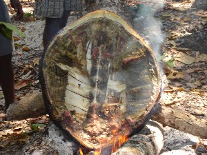 |
cɔkbiʈɔesue1 चौक्बीटौएसूए MORPH: cɔkbi-ʈɔe-sue. V क्रि. burning of turtle; कछुए को जलाना. SEE: cɔkbiʈɔesue2 ‘name, of a place’ ‘नाम, एक जगह का चौक्बीटौएसूएhm:{2}’.
cɔkbiʈɔesue2 चौक्बीटौएसूए MORPH: cɔkbi-ʈɔe-sue. N सं. name of a place where turtles are roasted; एक जगह का नाम जहां कछुए भूने जाते हैं. SD: habitat, रहन-सहन. NT: Turtles were burnt at this place. Hence, the place is named ‘turtle-bones-burning’. इस जगह कछुओं को जलाया जाता था अतः इस स्थान का नाम ‘कछुआ-हड्डी-पकाना’ है।. SEE: cɔkbiʈɔesue1 ‘burning of turtle’ ‘जलाना, कछुए को चौक्बीटौएसूएhm:{1}’.
 cɔkle चौकले VAR: cɔkʰle चौखले. N सं. insect eaten by woodpecker; कीड़ा जिसको कठफोड़वा खाता है. SD: insect & invertebrate, कीट-पतंग एवं अरीढ़ जीव.Environmental
cɔkle चौकले VAR: cɔkʰle चौखले. N सं. insect eaten by woodpecker; कीड़ा जिसको कठफोड़वा खाता है. SD: insect & invertebrate, कीट-पतंग एवं अरीढ़ जीव.Environmental
 |
 cɔkʰɔcmo चौखौच्मो N सं. a variety of green sea bird; एक तरह का हरा समुद्री पक्षी. SD: bird, पक्षी. NT: Alerts one to the arrival of an enemy. शत्रु के आगमन का संकेत देने वाला पक्षी।.Environmental
cɔkʰɔcmo चौखौच्मो N सं. a variety of green sea bird; एक तरह का हरा समुद्री पक्षी. SD: bird, पक्षी. NT: Alerts one to the arrival of an enemy. शत्रु के आगमन का संकेत देने वाला पक्षी।.Environmental
cɔkʰɔl चौखौल MORPH: cɔkʰɔ-l. DEIXIS डीक्सीस. by the side of (distant); साथ में (दूर). ɲo tɑ cɔkʰɔ-l kʰider ʈɔŋ be ञो ता चौखौल खीदेर टौङ बे. There are coconut trees by the side of the house. घर के साथ में नारियल के पेड़ हैं।. SD: space, अन्तरिक्ष.Environmental
cɔkʰɔro चौखौरो VAR: cokoro चोकोरो. Etym: Jeru; जेरू. VAR: cɑɡɑrɑ चागारा. Etym: Bea; बेया. N सं. a big wild flower that blooms once a year; एक प्रकार का बड़ा जंगली फूल जो वर्ष में एक बार खिलता है. SD: flora, फूल-पत्ती. NT: Its blooming is associated with the period between mid-May and August-end. Indicator of the rainy season. इस फूल का खिलना मध्य मई से अगस्त के अंत के समय से जुड़ा है। बरसात का समय।.Environmental
cɔkʰɔroʈɔlo1 चौखौरोटौलो MORPH: cɔkʰɔro-ʈɔlo. N सं. hail; ओले. SD: season, मौसम. SEE: cɔkʰɔroʈɔlo2 ‘Parak flower’ ‘पड़ाक का फूल चौखौरोटौलोhm:{2}’.Environmental
cɔkʰɔroʈɔlo2 चौखौरोटौलो MORPH: cɔkʰɔ-ro-ʈɔlo. N सं. Parak flower; पड़ाक का फूल. SD: flora, फूल-पत्ती. NT: Bloom indicates the beginning of the rainy season. This is associated with the period when pigs have maximum fat. So it is the best time to hunt pig. वर्षा ऋतु के आगमन का प्रतीक। पड़ाक के फूलते ही सूअरों का शिकार किया जाता है क्योंकि यही वह समय है जब सूअर में सबसे ज़्यादा चर्बी पाई जाती है।. SEE: cɔkʰɔroʈɔlo1 ‘hail’ ‘ओले चौखौरोटौलोhm:{1}’.Environmental
 |
 cɔkʰɔʈmo चौखौट्मो N सं. a kind of bird; एक प्रकार का रामचिरैया. Halcyon smyrnensis. SD: bird, पक्षी. NT: Makes a sound when it sees any animal or human, approaching, Size about 8 cm. 8 से.मी. लम्बा पक्षी जो किसी भी जन्तु या मनुष्य के आने का संकेत देता है।.Environmental
cɔkʰɔʈmo चौखौट्मो N सं. a kind of bird; एक प्रकार का रामचिरैया. Halcyon smyrnensis. SD: bird, पक्षी. NT: Makes a sound when it sees any animal or human, approaching, Size about 8 cm. 8 से.मी. लम्बा पक्षी जो किसी भी जन्तु या मनुष्य के आने का संकेत देता है।.Environmental
 |
cɔkʰɔʈmu चौखौट्मू VAR: cɔkʰɔcmo चौखौच्मो. N सं. a kind of large bird; Narcondam Hornbill; एक प्रकार का विशालकाय पक्षी. Aceros narcondami. SD: bird, पक्षी. NT: A large tropical rainforest bird with a big bill, found only on Narcondam Island in the Bay of Bengal, in small flocks of threes and fours. It usually perches on a tall tree. It feeds mainly on fruit and builds its nest inside a tree hole. नारकोन्दम द्वीप में पाया जाने वाला बड़ी चोंच वाला पक्षी जो तीन-चार के झुण्ड में घने जंगलों के ऊंचे पेड़ की शाखा पर देखा जाता है। फल इसका मुख्य खाद्य है। पेड़ की खोह के अंदर घोंसला बनाता है।.Environmental
cɔkʰ~cɔkʰi-l चौख~चौखी-ल DEIXIS डीक्सीस. in front; सामने. ʈʰ-er cɔkʰ ʈʰimikʰu be ठेर चौख ठीमीखू बे. There is a forest in front of me. मेरे सामने जंगल है।. ʈʰ-ot ɲɔ ter-cɔkʰi-l kʰeŋe be ठोत ञौ तेरचौखील खेङे बे. There is a cat in front of my house. मेरे घर के सामने एक बिल्ली है।. SD: space, अन्तरिक्ष.Environmental
cɔl चौल V क्रि. cut grass; shave (wood); घास काटना; घिसाई करना (लकड़ी की). cɛ mil tɛc bi cɔlo चै मील तैच बी चौलो. He cut the grass. उसने घास काटी।. ŋɑrɑm-kɑlemu-e-cɔle ङाराम कालेमू एचौले. Cut the grass fast. घास जल्दी-जल्दी काटो।.
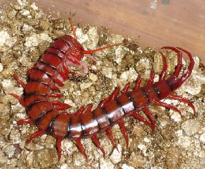 |
 cɔlekʰecɔm चौलेखेचौम VAR: cɔlikɑcɔm चौलीकाचौम. N सं. centipede, red; लाल कनखजूरा/ईल्ली. SD: insect & invertebrate, कीट-पतंग एवं अरीढ़ जीव.Environmental
cɔlekʰecɔm चौलेखेचौम VAR: cɔlikɑcɔm चौलीकाचौम. N सं. centipede, red; लाल कनखजूरा/ईल्ली. SD: insect & invertebrate, कीट-पतंग एवं अरीढ़ जीव.Environmental
 cɔlekʰi चौलेखी MORPH: cɔle-kʰi. VAR: cɔle-kʰe चौलेखे; cɔlexe चौलेखे; colɛse चोलैसे. N सं. Parak tree; पड़ाक पेड़. SD: flora, फूल-पत्ती. NT: An endemic tree the wood of which is known to last long and, hence, is used for making boats and doors. विशेष अण्डमानी पेड़ जो अपनी मजबूती और टिकाऊ होने के कारण नाव और दरवाज़ा बनाने के काम आता है।.Environmental
cɔlekʰi चौलेखी MORPH: cɔle-kʰi. VAR: cɔle-kʰe चौलेखे; cɔlexe चौलेखे; colɛse चोलैसे. N सं. Parak tree; पड़ाक पेड़. SD: flora, फूल-पत्ती. NT: An endemic tree the wood of which is known to last long and, hence, is used for making boats and doors. विशेष अण्डमानी पेड़ जो अपनी मजबूती और टिकाऊ होने के कारण नाव और दरवाज़ा बनाने के काम आता है।.Environmental
cɔlɛːmɔ चौलैऽमौ N सं. a kind of tree; एक प्रकार का पेड़. SD: flora, फूल-पत्ती.Environmental
 cɔm1 चौम N सं. wooden basket; लकड़ी की टोकरी. SD: household, घरेलू. SEE: cɔm2 ‘betelnut’ ‘सुपारी चौमhm:{2}’; cɔm3 ‘pointed object, any’ ‘नुकीला औज़ार, कोई भी चौमhm:{3}’; cɔm4 ‘shark, small’ ‘शार्क, छोटी चौमhm:{4}’; cɔm5 ‘stick, wooden’ ‘छड़, लकड़ी की चौमhm:{5}’; cɔm6 ‘tree’ ‘पेड़ चौमhm:{6}’.
cɔm1 चौम N सं. wooden basket; लकड़ी की टोकरी. SD: household, घरेलू. SEE: cɔm2 ‘betelnut’ ‘सुपारी चौमhm:{2}’; cɔm3 ‘pointed object, any’ ‘नुकीला औज़ार, कोई भी चौमhm:{3}’; cɔm4 ‘shark, small’ ‘शार्क, छोटी चौमhm:{4}’; cɔm5 ‘stick, wooden’ ‘छड़, लकड़ी की चौमhm:{5}’; cɔm6 ‘tree’ ‘पेड़ चौमhm:{6}’.
 |
 cɔm2 चौम VAR: ̘com चोम. N सं. betelnut; सुपारी. SD: edible item, खाद्य सामग्री, flora, फूल-पत्ती. SEE: cɔm1 ‘basket’ ‘टोकरी चौमhm:{1}’; cɔm3 ‘pointed object, any’ ‘नुकीला औज़ार, कोई भी चौमhm:{3}’; cɔm4 ‘shark, small’ ‘शार्क, छोटी चौमhm:{4}’; cɔm5 ‘stick, wooden’ ‘छड़, लकड़ी की चौमhm:{5}’; cɔm6 ‘tree’ ‘पेड़ चौमhm:{6}’.Environmental
cɔm2 चौम VAR: ̘com चोम. N सं. betelnut; सुपारी. SD: edible item, खाद्य सामग्री, flora, फूल-पत्ती. SEE: cɔm1 ‘basket’ ‘टोकरी चौमhm:{1}’; cɔm3 ‘pointed object, any’ ‘नुकीला औज़ार, कोई भी चौमhm:{3}’; cɔm4 ‘shark, small’ ‘शार्क, छोटी चौमhm:{4}’; cɔm5 ‘stick, wooden’ ‘छड़, लकड़ी की चौमhm:{5}’; cɔm6 ‘tree’ ‘पेड़ चौमhm:{6}’.Environmental
 cɔm3 चौम VAR: com चोम. N सं. an instrument used for taking out the eyes of a turtle; needle; chopsticks; कछुए की आंख निकालने के लिए एक औज़ार; सुई; चौपस्टिक्स.
cɔm3 चौम VAR: com चोम. N सं. an instrument used for taking out the eyes of a turtle; needle; chopsticks; कछुए की आंख निकालने के लिए एक औज़ार; सुई; चौपस्टिक्स.  cɔm-tɑ-o-u-ijji चौमताओऊईज्जी. (He) eats with chopsticks. (वह) चौपस्टिक्स से खा रहा है।. SD: tool, औज़ार, hunting & gathering, शिकार एवं संचय सम्बंधी. SEE: cɔm1 ‘basket’ ‘टोकरी चौमhm:{1}’; cɔm2 ‘betel-nut’ ‘सुपारी चौमhm:{2}’; cɔm4 ‘shark, small’ ‘शार्क, छोटी चौमhm:{4}’; cɔm5 ‘stick, wooden’ ‘छड़, लकड़ी की चौमhm:{5}’; cɔm6 ‘tree’ ‘पेड़ चौमhm:{6}’.Environmental
cɔm-tɑ-o-u-ijji चौमताओऊईज्जी. (He) eats with chopsticks. (वह) चौपस्टिक्स से खा रहा है।. SD: tool, औज़ार, hunting & gathering, शिकार एवं संचय सम्बंधी. SEE: cɔm1 ‘basket’ ‘टोकरी चौमhm:{1}’; cɔm2 ‘betel-nut’ ‘सुपारी चौमhm:{2}’; cɔm4 ‘shark, small’ ‘शार्क, छोटी चौमhm:{4}’; cɔm5 ‘stick, wooden’ ‘छड़, लकड़ी की चौमhm:{5}’; cɔm6 ‘tree’ ‘पेड़ चौमhm:{6}’.Environmental
cɔm4 चौम N सं. shark, small; छोटी शार्क मछली. SD: fish, मछली. SEE: cɔm1 ‘basket’ ‘टोकरी चौमhm:{1}’; cɔm2 ‘betelnut’ ‘सुपारी चौमhm:{2}’; cɔm3 ‘pointed object, any’ ‘नुकीला औज़ार, कोई भी चौमhm:{3}’; cɔm5 ‘stick, wooden’ ‘छड़, लकड़ी की चौमhm:{5}’; cɔm6 ‘tree’ ‘पेड़ चौमhm:{6}’.Environmental
cɔm5 चौम N सं. The wooden stick used to pierce pig’s body when it is roasted; लकड़ी की छड़ जिसे सूअर के शरीर में घुसाकर भूना जाता है ।. SD: tool, औज़ार, hunting & gathering, शिकार एवं संचय सम्बंधी. SEE: cɔm1 ‘basket’ ‘टोकरी चौमhm:{1}’; cɔm2 ‘betel-nut’ ‘सुपारी चौमhm:{2}’; cɔm3 ‘pointed object, any’ ‘नुकीला औज़ार, कोई भी चौमhm:{3}’; cɔm4 ‘shark, small’ ‘शार्क, छोटी चौमhm:{4}’; cɔm6 ‘tree’ ‘पेड़ चौमhm:{6}’.Environmental
 cɔm6 चौम N सं. mangrove tree; खाड़ी पेड़. SD: flora, फूल-पत्ती. SEE: cɔm1 ‘basket’ ‘टोकरी चौमhm:{1}’; cɔm2 ‘betelnut’ ‘सुपारी चौमhm:{2}’; cɔm3 ‘pointed object, any’ ‘नुकीला औज़ार, कोई भी चौमhm:{3}’; cɔm4 ‘shark, small’ ‘शार्क, छोटी चौमhm:{4}’; cɔm5 ‘stick, wooden’ ‘छड़, लकड़ी की चौमhm:{5}’.Environmental
cɔm6 चौम N सं. mangrove tree; खाड़ी पेड़. SD: flora, फूल-पत्ती. SEE: cɔm1 ‘basket’ ‘टोकरी चौमhm:{1}’; cɔm2 ‘betelnut’ ‘सुपारी चौमhm:{2}’; cɔm3 ‘pointed object, any’ ‘नुकीला औज़ार, कोई भी चौमhm:{3}’; cɔm4 ‘shark, small’ ‘शार्क, छोटी चौमhm:{4}’; cɔm5 ‘stick, wooden’ ‘छड़, लकड़ी की चौमhm:{5}’.Environmental
cɔmɑ चौमा N सं. one who ignores purposely; अनसुना करने वाला. SD: people, लोग.
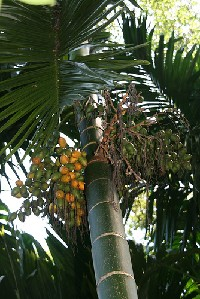 |
cɔmʈɔŋ चौमटौङ MORPH: cɔm-ʈɔŋ. N सं. betelnut tree; सुपारी का पेड़. SD: flora, फूल-पत्ती.Environmental
cɔŋ चौङ VAR: cɔːŋɔ चौऽङौ. N सं. bush; झाड़ी. SD: flora, फूल-पत्ती.Environmental
 cɔŋom चोङोम V क्रि. get; मिलना.
cɔŋom चोङोम V क्रि. get; मिलना.  ŋoi copʰe cɔŋo ङोई चोफे चौङो. How much did you get?; Did you get enough? तुम्हें कितना मिला?; क्या तुम्हें काफी मिला? SEE: tɑɖuk ‘fetch’ ‘मंगवाना ताडूक ’.
ŋoi copʰe cɔŋo ङोई चोफे चौङो. How much did you get?; Did you get enough? तुम्हें कितना मिला?; क्या तुम्हें काफी मिला? SEE: tɑɖuk ‘fetch’ ‘मंगवाना ताडूक ’.
cɔŋɔ1 चौङौ N सं. dump, of forest; जंगल का कचरा. SD: waste product, कूड़ा-कचरा. SEE: cɔɲɔ2 ‘problems’ ‘समस्याएं चौञौhm:{2}’; cɔɲɔ3 ‘outrigger’ ‘बोया चौञौhm:{3}’.
cɔŋɔ2 चौङौ N सं. have a series of problems one after another; एक के बाद एक समस्याओं का क्रम. SD: psychological predicate, मनोवैज्ञानिक विधेय. SEE: cɔɲɔ1 ‘dump, of forest’ ‘कचरा, जंगल का चौञौhm:{1}’; cɔɲɔ3 ‘outrigger’ ‘बोया चौञौhm:{3}’.
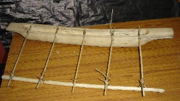 |
cɔɲɔ3 चौञौ Etym: Bo; बो. N सं. outrigger; बोया. SD: boat related, नाव सम्बंधी. SEE: boyɑ ‘outrigger’ ‘उलण्डी बोया ’; cɔŋɔ ‘outrigger’ ‘बोया चौञौ ’; cɔrɔkʰ2 ‘horizontal bars of outrigger’ ‘बोया की आड़ी डंडियां चौरौखhm:{2}’; kʰuduli ‘outrigger’ ‘बोया खूदूली ’; ʈʰel ‘bamboo of outrigger hanging in the water’ ‘पानी में लटकता हुआ उलण्डी के बांस का टुकड़ा ठेल ’; cɔɲɔ1 ‘dump, of forest’ ‘कचरा, जंगल का चौञौhm:{1}’; cɔɲɔ2 ‘problems’ ‘समस्याएं चौञौhm:{2}’.Environmental
 cɔp1 चौप VAR: cop चोप. N सं. a kind of fish; एक प्रकार की मछली. SD: fish, मछली. SEE: cɔp2 ‘fish’ ‘मछली चौपhm:{2}’; cɔp3 ‘tree’ ‘पेड़ चौपhm:{3}’; cɔp4 ‘weight’ ‘वज़न चौपhm:{4}’.Environmental
cɔp1 चौप VAR: cop चोप. N सं. a kind of fish; एक प्रकार की मछली. SD: fish, मछली. SEE: cɔp2 ‘fish’ ‘मछली चौपhm:{2}’; cɔp3 ‘tree’ ‘पेड़ चौपhm:{3}’; cɔp4 ‘weight’ ‘वज़न चौपhm:{4}’.Environmental
 cɔp2 चौप VAR: cop चोप. N सं. a sweet-sour fruit; एक खट्टा मीठा फल. SD: edible fruit, खाद्य फल. SEE: cɔp1 ‘fish’ ‘मछली चौपhm:{1}’; cɔp3 ‘tree’ ‘पेड़ चौपhm:{3}’; cɔp4 ‘weight’ ‘वज़न चौपhm:{4}’.Environmental
cɔp2 चौप VAR: cop चोप. N सं. a sweet-sour fruit; एक खट्टा मीठा फल. SD: edible fruit, खाद्य फल. SEE: cɔp1 ‘fish’ ‘मछली चौपhm:{1}’; cɔp3 ‘tree’ ‘पेड़ चौपhm:{3}’; cɔp4 ‘weight’ ‘वज़न चौपhm:{4}’.Environmental
 cɔp3 चौप VAR: cop चोप. N सं. a kind of tree; बादाम पेड़. SD: flora, फूल-पत्ती. SEE: cɔp1 ‘fish’ ‘मछली चौपhm:{1}’; cɔp2 ‘fish’ ‘मछली चौपhm:{2}’; cɔp4 ‘weight’ ‘वज़न चौपhm:{4}’.Environmental
cɔp3 चौप VAR: cop चोप. N सं. a kind of tree; बादाम पेड़. SD: flora, फूल-पत्ती. SEE: cɔp1 ‘fish’ ‘मछली चौपhm:{1}’; cɔp2 ‘fish’ ‘मछली चौपhm:{2}’; cɔp4 ‘weight’ ‘वज़न चौपhm:{4}’.Environmental
 cɔp4 चौप VAR: cop चोप. N सं. weight fixed at the end of a fishing line; मछली पकड़ने के कांटे के सिरे पर लगा वज़न. SD: tool, औज़ार, hunting & gathering, शिकार एवं संचय सम्बंधी. SEE: cɔp1 ‘fish’ ‘मछली चौपhm:{1}’; cɔp2 ‘fish’ ‘मछली चौपhm:{2}’; cɔp3 ‘tree’ ‘पेड़ चौपhm:{3}’.Environmental
cɔp4 चौप VAR: cop चोप. N सं. weight fixed at the end of a fishing line; मछली पकड़ने के कांटे के सिरे पर लगा वज़न. SD: tool, औज़ार, hunting & gathering, शिकार एवं संचय सम्बंधी. SEE: cɔp1 ‘fish’ ‘मछली चौपhm:{1}’; cɔp2 ‘fish’ ‘मछली चौपhm:{2}’; cɔp3 ‘tree’ ‘पेड़ चौपhm:{3}’.Environmental
cɔpʰe चौफे VAR: cɔfe चौफ़े. Q परि. much; more; lots of; be enough; काफ़ी; ज़्यादा; बहुत सारा; पर्याप्त. ŋɑ-ʈɔ-cɔfe ङाटौचौफ़े. You have many necklaces. तुम्हारे पास कई हार हैं।. rɑ-cɔpʰe-be राचौफेबे. There are many pigs. वहां पर काफ़ी सूअर हैं।. SD: quantifier, परिमाण वाचक. SEE: ɛccɔːfe ‘more’ ‘अधिक; ज़्यादा ऐच्चौऽफ़े ’.
cɔpʰɔn चौफौन VAR: cɔɸon चौफोन. N सं. priest; पुजारी. SD: people, लोग.
cɔpʈʰomɔʈɔe चौप्ठोमौटौए MORPH: cɔp-ʈʰomɔ-ʈɔe. N सं. flesh on between thigh and foot; जांघ से पांव के बीच का मांस. ʈʰe-cɔp-ʈʰomɔ-ʈɔe ठेचौप्ठोमौटौए. flesh between my thigh and foot. मेरी जांघ से पांव तक का मांस. SD: body part term, शारीरिक अंग शब्दावली.
 |
cɔro चौरो N सं. a kind of heron; Median Egret; एक प्रकार का बगुला. SD: bird, पक्षी.Environmental
cɔro1 चौरो V क्रि. downward flow; flowing down like a stream; नीचे बहना; झरने की तरह नीचे गिरना. SEE: cɔro2 ‘fish’ ‘मछली चौरोhm:{2}’.
 |
 cɔro2 चौरो VAR: coːrɔ चोऽरौ. N सं. a type of fish; एक प्रकार की मछली. SD: fish, मछली. SEE: cɔro1 ‘downward flow’ ‘नीचे बहना चौरोhm:{1}’.Environmental
cɔro2 चौरो VAR: coːrɔ चोऽरौ. N सं. a type of fish; एक प्रकार की मछली. SD: fish, मछली. SEE: cɔro1 ‘downward flow’ ‘नीचे बहना चौरोhm:{1}’.Environmental
cɔrom चौरोम MORPH: cɔr-o-m. V क्रि. tears well up; आंसू आना.
cɔroŋ चौरोङ N सं. a grape-like fruit with flat seeds; अंगूर की तरह का फल जिसके सपाट बीज होते हैं. SD: edible fruit, खाद्य फल. NT: This fruit is boiled in water and then the syrup is used as a sweetener. इस फल को उबाल कर चाशनी बनाई जाती है।.Environmental
cɔrɔ चौरौ N सं. a kind of tree; एक प्रकार का पेड़. SD: flora, फूल-पत्ती. NT: The leaves of this tree are crushed and the juice drunk in case of malaria or injury. मलेरिया होने पर या चोट लगने पर इस पेड़ की पत्तियों को मसलकर उसका रस औषधी के रूप में पिया जाता है।.Environmental
cɔrɔk चौरौक N सं. joint; जोड़. cɔrɔk tu-kʰulut चौरौक तू खूलूत. joint of knee. घुटने का जोड़. SD: body part term, शारीरिक अंग शब्दावली.
cɔrɔkʰ1 चौरौख N सं. anchorage; लंगर डालने का स्थान. SD: boat related, नाव सम्बंधी. SEE: cɔrɔkʰ2 ‘horizontal bars of outrigger’ ‘बोया की आड़ी डंडियां चौरौखhm:{2}’; cɔrɔkʰ3 ‘support of wood’ ‘सहारा, लकड़ी का चौरौखhm:{3}’.Environmental
cɔrɔkʰ2 चौरौख N सं. horizontal bars of outrigger; बोया की आड़ी डंडियां. SD: boat related, नाव सम्बंधी. SEE: boyɑ ‘outrigger’ ‘उलण्डी बोया ’; cɔŋɔ ‘outrigger’ ‘बोया चौञौ ’; kʰuduli ‘outrigger’ ‘बोया खूदूली ’; ʈʰel ‘bamboo of outrigger hanging in the water’ ‘पानी में लटकता हुआ उलण्डी के बांस का टुकड़ा ठेल ’; cɔrɔkʰ1 ‘anchorage’ ‘लंगर डालने का स्थान चौरौखhm:{1}’; cɔrɔkʰ3 ‘support of wood’ ‘सहारा, लकड़ी का चौरौखhm:{3}’.Environmental
cɔrɔkʰ3 चौरौख N सं. support of wood; लकड़ी का सहारा. SD: household, घरेलू. NT: This wood is used as a support in building houses. This wood also forms the sides of the canoe, the boya dongi. यह लकड़ी घर बनाने के काम भी आती है। बोया डोंगी के किनारे लगाई जाने वाली लकड़ी।. SEE: cɔrɔkʰ1 ‘anchorage’ ‘लंगर डालने का स्थान चौरौखhm:{1}’; cɔrɔkʰ2 ‘horizontal bars of outrigger’ ‘बोया की आड़ी डंडियां चौरौखhm:{2}’.
cɔrɔkʰcom चौरौखचोम MORPH: cɔrɔkʰ-com. N सं. tied ends of the horizontal bars of the outrigger; बोया की आड़ी डंडियों का बंधा हुआ सिरा. SD: boat related, नाव सम्बंधी.Environmental
cɔrɔkʰemo चौरौखेमो Etym: Bo; बो. N सं. creature; एक प्रकार का जीव. SD: life, जीवन. NT: Lives in the mangrove and responds to human call. वनस्पति में रहने वाला जीव जो पुकारने पर वापस आवाज़ लगाता है।.
 |
 cɔrɔlo चौरौलो VAR: cɔrɔlɔ चौरौलौ; cɔrɑlo चौरालो. N सं. long-tailed parrot with red and green face; लम्बी पूंछ वाला तोता जिसका मुंह लाल और हरा होता है. Psittacula longicauda. SD: bird, पक्षी.Environmental
cɔrɔlo चौरौलो VAR: cɔrɔlɔ चौरौलौ; cɔrɑlo चौरालो. N सं. long-tailed parrot with red and green face; लम्बी पूंछ वाला तोता जिसका मुंह लाल और हरा होता है. Psittacula longicauda. SD: bird, पक्षी.Environmental
cɔʈlo चौटलो N सं. Pole star; ध्रुव तारा. SD: natural environment, प्राकृतिक वातावरण.Environmental
cɔʈɔl चौटौल N सं. Chinese sparrow hawk; एक प्रकार की चीनी चील. SD: bird, पक्षी.Environmental
 |
 cɔʈɔʈ1 चौटौट N सं. small, bulbul-like bird; Little Stint; बुलबुल जैसा छोटा पक्षी. SD: bird, पक्षी. NT: It has white feathers, walks with uplifted plumes, and makes a queer sound. It is never hunted because it is supposed to bring storms and other miseries if troubled. यह सफ़ेद पंखों वाला पक्षी पूंछ उठाकर चलता है। इस नन्हें पक्षी का शिकार कभी नहीं किया जाता क्योंकि ऐसा माना जाता है कि इसको तंग करने से आंधी-तूफ़ान व अन्य तरह की मुसीबतें आती हैं।. SEE: cɔʈɔʈ2 ‘bird’ ‘पक्षी चौटौटhm:{2}’; cɔʈɔʈ3 ‘partridge’ ‘तीतर चौटौटhm:{3}’.Environmental
cɔʈɔʈ1 चौटौट N सं. small, bulbul-like bird; Little Stint; बुलबुल जैसा छोटा पक्षी. SD: bird, पक्षी. NT: It has white feathers, walks with uplifted plumes, and makes a queer sound. It is never hunted because it is supposed to bring storms and other miseries if troubled. यह सफ़ेद पंखों वाला पक्षी पूंछ उठाकर चलता है। इस नन्हें पक्षी का शिकार कभी नहीं किया जाता क्योंकि ऐसा माना जाता है कि इसको तंग करने से आंधी-तूफ़ान व अन्य तरह की मुसीबतें आती हैं।. SEE: cɔʈɔʈ2 ‘bird’ ‘पक्षी चौटौटhm:{2}’; cɔʈɔʈ3 ‘partridge’ ‘तीतर चौटौटhm:{3}’.Environmental
 |
 cɔʈɔʈ2 चौटौट VAR: cɔʈɔːʈ चौटौऽट. N सं. a kind of bird; Pintail Snipe; एक प्रकार का पक्षी. Gallinago stenura. SD: bird, पक्षी. SEE: cɔʈɔʈ1 ‘bird’ ‘पक्षी चौटौटhm:{1}’; cɔʈɔʈ3 ‘partridge’ ‘तीतर चौटौटhm:{3}’.Environmental
cɔʈɔʈ2 चौटौट VAR: cɔʈɔːʈ चौटौऽट. N सं. a kind of bird; Pintail Snipe; एक प्रकार का पक्षी. Gallinago stenura. SD: bird, पक्षी. SEE: cɔʈɔʈ1 ‘bird’ ‘पक्षी चौटौटhm:{1}’; cɔʈɔʈ3 ‘partridge’ ‘तीतर चौटौटhm:{3}’.Environmental
 cɔʈɔʈ3 चौटौट N सं. a variety of partridge; Button Quail; एक प्रकार का तीतर. SD: bird, पक्षी. NT: It lives in flocks. According to ancient lore, if these birds flew at night, it was a sign of an approaching enemy. झुण्ड में रहता है। पुराने ज़माने में माना जाता था कि इनकी रात की उड़ान शत्रु के आने का संकेत देती है।. SEE: cɔʈɔʈ1 ‘bird’ ‘पक्षी चौटौटhm:{1}’; cɔʈɔʈ2 ‘bird’ ‘पक्षी चौटौटhm:{2}’.Environmental
cɔʈɔʈ3 चौटौट N सं. a variety of partridge; Button Quail; एक प्रकार का तीतर. SD: bird, पक्षी. NT: It lives in flocks. According to ancient lore, if these birds flew at night, it was a sign of an approaching enemy. झुण्ड में रहता है। पुराने ज़माने में माना जाता था कि इनकी रात की उड़ान शत्रु के आने का संकेत देती है।. SEE: cɔʈɔʈ1 ‘bird’ ‘पक्षी चौटौटhm:{1}’; cɔʈɔʈ2 ‘bird’ ‘पक्षी चौटौटhm:{2}’.Environmental
cɔwboŋ चौवबोङ N सं. bush; झाड़ी. SD: natural environment, प्राकृतिक वातावरण.Environmental
cɔːy चौऽय N सं. mother’s mother; मां की मां. SD: kin term, सम्बंधी वाचक शब्दावली.
cɔye चौये V क्रि. catch, by force; ताकत से पकड़ना.
cɔːye चौऽये N सं. father’s sister’s husband; फूफा. SD: kin term, सम्बंधी वाचक शब्दावली.
cuɑpʰoro चूआफोरो MORPH: cuɑ-pʰoro. DEIXIS डीक्सीस. near; पास. SD: space, अन्तरिक्ष.Environmental
cuɡotɔ चूगोतौ Etym: Jeru; जेरू. N सं. mushroom; कुकुरमुत्ता. SD: flora, फूल-पत्ती. SEE: doɡotɑ ‘mimusops’ ‘कुकुरमुत्ता दोगोता ’.Environmental
cul चूल DEIXIS डीक्सीस. have; near; होना/ पास. du ɑkɑʈɑ cul tʰire be दू आकाटा चूल थीरे बे. That girl has a child. उस लड़की के पास एक बच्चा है।. SD: state, अवस्था.
-cul -चूल CASE का. locative, proximate; अधिकरण कारक. o-tɑjiyocɔrer lotopʰolɔ ecul ocɔtɑ ipʰu kʰudi ओताजीयोचौरेर लोतोफोलौ एचूल ओचौता ईफू खूदी. Because they did not have the net, they could not catch the fish. उनके पास जाल न होने की वजह से वे मछली नहीं पकड़ पाए।. SD: grammar, व्याकरण. NT: postnominal. कारक चिह्न।.
culemo चूलेमो VAR: culɛmo चूलैमो. N सं. berry; बेरी फल. ŋu-ʈʰi culɛmo-bi tɛše pʰu-tɛš-ɑmo ʈʰu-ŋol-o-bom ङूठी चूलैमोबी तैशे फूतैशामो ठूङोलोबोम. If you do not give me the berries, I will cry. अगर तुम मुझे बेर नहीं दोगे तो मैं रो पड़ूंगा।. SD: flora, फूल-पत्ती, edible fruit, खाद्य फल.Environmental
curɑlɔ चूरालौ N सं. pebbles; कंकड़. SD: marine, समुद्री.Environmental
curuŋ चूरूङ N सं. sweets; मिठाई.  ɑtʰirenu curuŋ-bi rɑlišu ijuko आथीरेनू चूरूङबी रालीशू ईजूको. The children ate up all the sweets. बच्चों ने सारी मिठाई खा ली।. SD: edible item, खाद्य सामग्री.Environmental
ɑtʰirenu curuŋ-bi rɑlišu ijuko आथीरेनू चूरूङबी रालीशू ईजूको. The children ate up all the sweets. बच्चों ने सारी मिठाई खा ली।. SD: edible item, खाद्य सामग्री.Environmental
cuːyiye चूऽयीये MORPH: cuːy-iye. N सं. headache; सिरदर्द. t-ɛr-cu-iye-k-ɔm तैरचूईयेकौम. I have a headache. मुझे सिरदर्द हो रहा है।. SD: illness, रोग.
cyɑliyo च्यालीयो MORPH: cyɑ-liyo. WH-Q प्रश्न. what place; कौन सी जगह. SD: interrogative, प्रश्नवाचक.